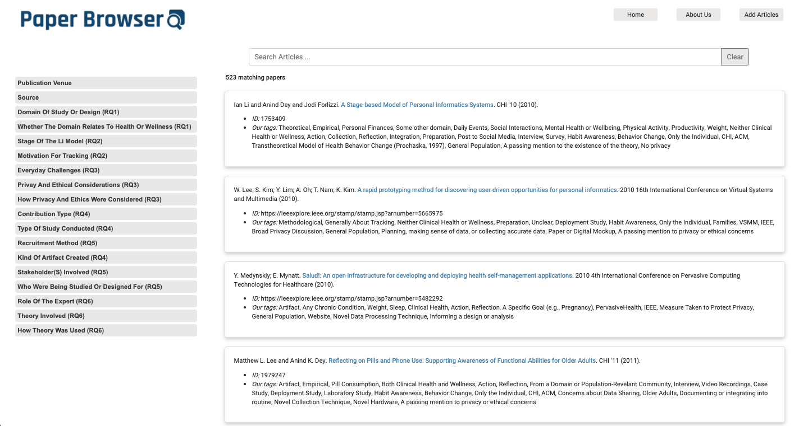

Proceedings of the ACM on Interactive, Mobile, Wearable and Ubiquitous Technologies
December 2020
Article No.: 126
Abstract:
The research community on the study and design of systems for personal informatics has grown over the past
decade. To take stock of what the topics the field has studied and methods the field has used, we map and
label
523 publications from ACM's library, IEEE Xplore, and PubMed. We surface that the literature has focused
on
studying and designing for health and wellness domains, an emphasis on understanding and overcoming
barriers
to
data collection and reflection, and progressively fewer contributions involving artifacts being made. Our
mapping review suggests directions future research could explore, such as identifying and resolving
barriers
to
tracking stages beyond collection and reflection, engaging more with domain experts, and further
discussing
the
privacy and ethical concerns around tracked data.
Paper Browser web application is developed specifically for this research. This website is a powerful
tool
for organizing, categorizing, and improving the study as it provides an opportunity for scholars to access
the
original references easily and quickly. It also lets the authors enrich the quality of the work by
uploading
their new publications.

Paper Browser - Department of Informatics, UC Irvine - June 2020
In this paper I tried to explain the importance of infrastructure in the 21st century and answer
the following questions:
What makes up infrastructure?
What is its purpose?
Why is it essential?
How does it evolve
and
change?
As technology has improved and the internet becomes part of our lives, the notion of infrastructure has
been generalized to the world of information technology and, as a result, IT infrastructure was
introduced.
In the 21st century, many people take advantage of using IT infrastructure, without consciously being
aware of its existence, and the significance of its role in shaping society. - [ Read More ]
The concept of technology has been used broadly and repeatedly. Society, on the other hand, has its own
meaning especially when is used in relation with effects of technology. In this article, I addressed some
of these problems:
Is technology an abstract concept?
What about society?
Do technology and society exist in two
separate
worlds?
Does technology control our lives directly?
Technology exists as a medium that has been designed, created, shaped, evolved and more importantly
adapted by society throughout history. Society itself is an essential factor in terms of its adaption with
technology and the extent it is impacted by technological innovations. In fact, as society creates
technology, technology can be used by people to reshape civilization.- [ Read More ]
Designed by payamd.com © 2019 - 2022